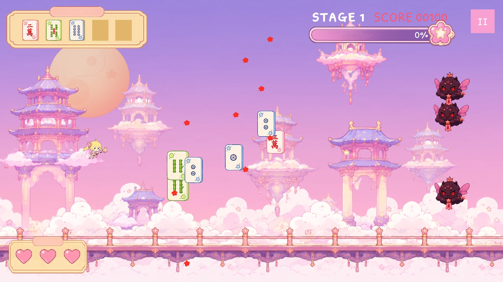
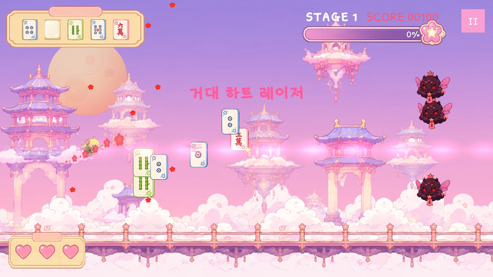

GAMEPLAY
탄막 속에서 맞추는 마작패
별 탄환을 쏘며 구름 궁전을 가로지르는 2D 횡스크롤 슈팅. 적이 떨어뜨린 마작패를 모으면 게임이 조합을 판정하고, 완성된 패에 따라 마법이 발동합니다.

탄막을 피하고
공격은 자동으로 나갑니다. 적의 탄환 사이로 비행하세요.
마작패를 모아
적이 떨어뜨린 패에 다가가면 화면의 패 슬롯에 들어옵니다.
마법을 펼치세요
패가 조합을 이루면 하트 레이저 같은 스킬이 발동합니다.

MADE WITH AI
게임 속 모든 요소를
AI로 만들어보다
캐릭터와 배경, 전투 연출과 게임 로직까지. 리치 앤 플라이는 게임에 들어가는 모든 요소를 AI로 제작해본 프로젝트입니다.
PLAY ON PC
리치 앤 플라이 플레이하기
ZIP 파일의 압축을 모두 푼 뒤 RichiFly.exe를 실행하세요.
WASD 또는 방향키로 이동 Space를 누르는 동안 정밀 이동
Windows용 ZIP 받기
Windows 64비트 · 키보드 플레이